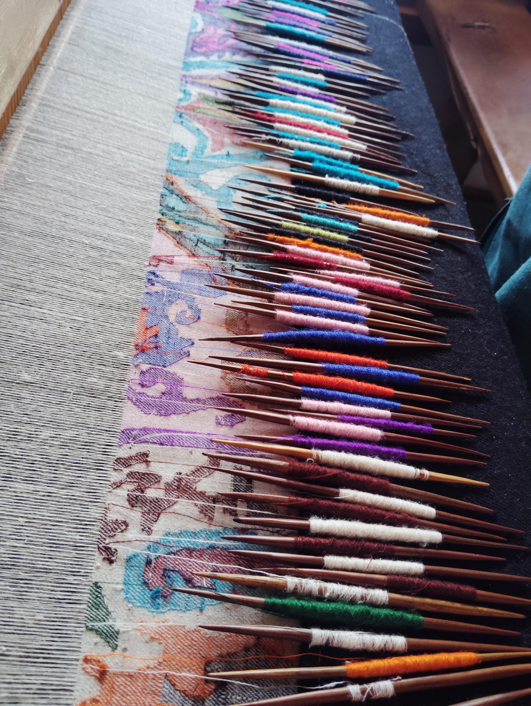
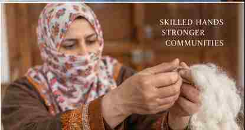

01 · WEAVING
The rhythm of the loom
Weaving takes patience, attention and practiced hands. Each order is discussed with care so that expectations are clear before work begins.
THE HANDS BEHIND THE WORK
A closer look at the materials, skills and careful work behind Kashmir’s textile traditions.
WATCH THE WORK
A workshop and shawl film from the Civara project library. Use the video controls to pause or replay it.



INSIDE THE WORKSHOP
At Civara, we want customers to see more than a finished shawl. We share what we can about the material, the making, the tradition and the evidence behind each product.
Weaving takes patience, attention and practiced hands. Each order is discussed with care so that expectations are clear before work begins.

Fibre, yarn, weave and finish matter. We aim to describe each product accurately and distinguish pure Pashmina from other materials or machine-spun constructions.

Sozani and other embroidery traditions bring another layer of skill to Kashmir textiles. Designs and workmanship vary by piece and order.

We work with traditional craft categories including Kani and Jamawar. Product specifications and availability are confirmed for each enquiry.
The loom-detail photograph is from Civara’s workshop. Other images in this section are craft references from our project library, not documentary photographs of the specific item offered. Product-specific material claims, GI status and laboratory evidence will be shown only where verified for the relevant item.
TRANSPARENCY FIRST
For relevant products, we can discuss specifications, available test reports, origin information, samples and documentation before an order is confirmed.
How wholesale works →LET’S TALK ABOUT YOUR REQUIREMENTS
Tell us the product, material, size, quantity and destination you have in mind. We will confirm what we can supply.
Contact Civara